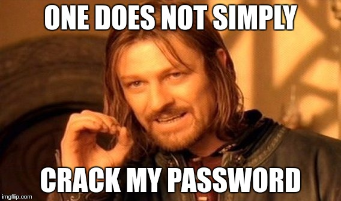

Sécurité Web
don't get pwnd!

Par Alexandre Gravel-Raymond
OWASP Top Ten Project
Open Web Application Security Project (OWASP) est une communauté publique permettant à des organismes de développer, acheter et maintenir des applications fiables.
L’objectif principal du Top 10 de l’OWASP est de sensibiliser les développeurs, concepteurs, architectes, décideurs, et les entreprises aux conséquences des faiblesses les plus importantes inhérentes à la sécurité des applications web.
OWASP Top Ten Project
- Injection
- Violation de gestion d’authentification et de session
- Cross-Site Scripting (XSS)
- Références directes non sécurisées à un objet
- Mauvaise configuration sécurité
- Exposition de données sensibles
- Manque de contrôle d’accès au niveau fonctionnel
- Cross-Site Request Forgery (CSRF)
- Utilisation de composants avec des vulnérabilités connues
- Redirection et renvois non validés
1. Injection
« Une faille d'injection, telle l'injection SQL, OS et LDAP, se produit quand une donnée non fiable est envoyée à un interpréteur en tant qu'élément d'une commande ou d'une requête. »

Source: http://xkcd.com/327/
Injection SQL
Cas typique d'injection SQL :
Code : $sql = "SELECT * FROM users
WHERE login = '".$_GET['login']."' AND password = '".$_GET['password']."'";
$user = mysqli_query($sql);
Requête :GET /login.php?login=unicorn&password='+OR+'1'='1 HTTP/1.1
Résultat :SELECT * FROM users
WHERE login = 'unicorn' AND password = '' OR '1'='1'
Comment se protéger ?
- Ne jamais faire confiance aux données provenant d'une source tiers (paramètres GET/POST, cookies, base de données, etc).
- Ne jamais faire confiance aux données provenant d'une source tiers.
-
Toujours échapper les chaînes de caractères à insérer dans une requête ou une commande. Exemples :
MySQLi :
$login = mysqli_real_escape_string($_GET['login']);PDO :
$login = $connection->quote($_GET['login']);
- Utiliser des requêtes préparées ou des procédures stockées.
- Ne pas réinventer la roue :
$login = str_replace("'", "\\'", $_GET['login']);
Attention !
De telles injections sont théoriquement possibles à chaque moment où l'application interagit avec un système tiers
- Commandes systèmes de l'OS
- Envoi de mails
- Appel à un webservice
- Etc.
2. Violation de gestion d’authentification et de session
« Les fonctions applicatives relatives à l'authentification et la gestion de session ne sont souvent pas mises en œuvre correctement, permettant aux attaquants de [...] s'approprier les identités d'autres utilisateurs. »

Exemples de vulnérabilité
- Les mots de passe sont stockés ou envoyés en clair (le chiffrement MD5 est insuffisant)
- Timeout de session trop long (prendre en compte les utilisations sur des postes publics)
- Exposition (ex: dans l'URL) ou vulnérabilité des IDs de session
3. Cross-Site Scripting (XSS)
« Les failles XSS se produisent chaque fois qu'une application accepte des données non fiables et les envoie à un navigateur web sans validation appropriée. XSS permet à des attaquants d'exécuter du script dans le navigateur de la victime afin de détourner des sessions utilisateur, défigurer des sites web, ou rediriger l'utilisateur vers des sites malveillants. »

Exemple de faille XSS
Code :
Requête :GET /index.php?search="/><script>alert('Vive+le+Québec+Libre+!');</script> HTTP/1.1
Rendu :
PWND!
Comment s'en prémunir
- Ne jamais faire confiance aux données provenant d'une source tiers (paramètres GET/POST, cookies, base de données, etc).
- Ne jamais faire confiance aux données provenant d'une source tiers.
-
Toujours échapper les chaînes de caractères à insérer dans dans une page HTML. Exemples :
PHP :
Smarty :
- Ne pas réinventer la roue :
$search = str_replace('"', '\\"', $_GET['search']); - Toujours déclarer l'encodage de la page HTML pour éviter des contournement par modification de l'encodage (UTF-7)
Attention !
Il faut toujours prendre en compte le contexte dans lequel la chaîne sera affichée.
- Dans du code JavaScript / JSON :
json_encode() - Dans du code CSS
- Dans un URL :
url_encode() - Dans un commentaire HTML
Bâton de sourcier :';alert(String.fromCharCode(88,83,83))//';alert(String.fromCharCode(88,83,83))//";
alert(String.fromCharCode(88,83,83))//";alert(String.fromCharCode(88,83,83))//--
></SCRIPT>">'><SCRIPT>alert(String.fromCharCode(88,83,83))</SCRIPT>
Des attaques complexes sont possibles. Pratiquez-vous avec un Cheat Sheet : https://www.owasp.org/index.php/XSS_Filter_Evasion_Cheat_Sheet
4. Références directes non sécurisées à un objet
« Une référence directe à un objet se produit quand un développeur expose une référence à un objet d'exécution interne, tel un fichier, un dossier, un enregistrement de base de données ou une clé de base de données. »

Exemple d'attaque
URL de téléchargement :http://www.example.net/download_invoice.php?id=665
Humm...
Solutions
- Implémenter des références indirecte aux objets auxquels l'utilisateur a réellement accès.
Télécharger ma 6e facture :
http://www.example.net/download_invoice.php?n=6 - Vérifier les droits à chaque tentative d'accès à une ressource protégée.
5. Mauvaise configuration sécurité
« Une bonne sécurité nécessite de disposer d'une configuration sécurisée définie et déployée pour l'application, contextes, serveur d'application, serveur web, serveur de base de données et la plate-forme. »

6. Exposition de données sensibles
« Beaucoup d'applications web ne protègent pas correctement les données sensibles telles que les cartes de crédit, identifiants d'impôt et informations d'authentification. Les pirates peuvent voler ou modifier ces données faiblement protégées pour effectuer un vol d'identité, de la fraude à la carte de crédit ou autres crimes. »

Défenses possible
- Chiffrer les données sensibles (avec un algorithme approprié) lors du stockage et du transport (SSL) des données
- Stocker le moins possible de données sensibles
7. Manque de contrôle d’accès au niveau fonctionnel
« Pratiquement toutes les applications web vérifient les droits d'accès au niveau fonctionnel avant de rendre cette fonctionnalité visible dans l'interface utilisateur. Cependant, les applications doivent effectuer les mêmes vérifications de contrôle d'accès sur le serveur lors de l'accès à chaque fonction. »

8. Cross-Site Request Forgery (CSRF)
« Une attaque CSRF (Cross Site Request Forgery) force le navigateur d'une victime authentifiée à envoyer une requête HTTP forgée, comprenant le cookie de session de la victime ainsi que toute autre information automatiquement inclue, à une application web vulnérable. »
Exemple d'attaque
URL d'envoi d'email massif :http://www.example.net/admin/massive_send.php?title=Code+Promo&body=Bonjour+PRENOM,[...]
Dans une page non-liée, hébergée par le pirate :
Effet : Un utilisateur, ayant des droits suffisants, accédant par inadvertance à cette page verra l'action malicieuse déclenchée en son nom sur le site web vulnérable.
PWND!
Défenses possibles
- Utiliser un token d'utilisation unique dans un champ caché des formulaires (Anti-CSRF token)
- Demander à l'utilisateur de confirmer son action (saisir son mot de passe, CAPTCHA, etc.)
Attention :
- Il est nécessaire, mais non suffisant, d'utiliser une méthode HTTP appropriée (POST et non GET) pour les actions sensibles
- Cette attaque est fréquemment combinée à une attaque XSS du même site ou d'un site tiers
- La vérification de l'entête HTTP Referer n'est pas suffisante
- Attention également au Click-Jacking ! (utiliser X-Frame-Options)
9. Utilisation de composants avec des vulnérabilités connues
« Les composants vulnérables, tels que bibliothèques, contextes et autres modules logiciels fonctionnent presque toujours avec des privilèges maximum. Ainsi, si exploités, ils peuvent causer des pertes de données sérieuses ou une prise de contrôle du serveur. »

10. Redirections et renvois non validés
« Les applications web redirigent fréquemment les utilisateurs vers d'autres pages et sites internet, et utilisent des données non fiables pour déterminer les pages de destination. Sans validation appropriée, les attaquants peuvent réorienter les victimes vers des sites de phishing ou de malware. »

Exemple d'attaque
Code de redirection :header('Location: '.$_GET['url']);
URL envoyé à un utilisateur innocent :http://www.example.com/redirect.php?url=http://www.example-phishing.com
Effet : L'image de marque du site (son URL) est détournée afin de gagner la confiance de l'utilisateur.
PWND!
Comment bloquer l'attaque
- Ne pas inclure l'URL de redirection dans les paramètres GET ou POST
- Préférer une valeur abstraite (
url=24) qui ne pourra pas être détournée - Si c'est nécessaire de le faire, toujours vérifier la validité de l'URL avant de l'envoyer à l'utilisateur
En bonus
- Ne jamais se baser uniquement sur la sécurité par l'obscurité
- Faire auditer son code / son application par un pair
- Garder à l'esprit que ce n'est pas toujours le code qui est en cause
- Hackez !
THE END
Par Alexandre Gravel-Raymond